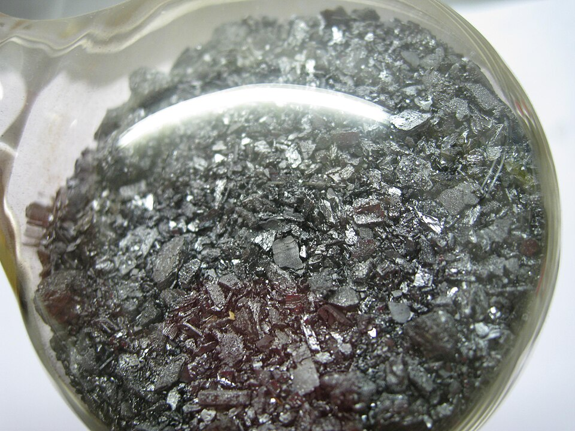
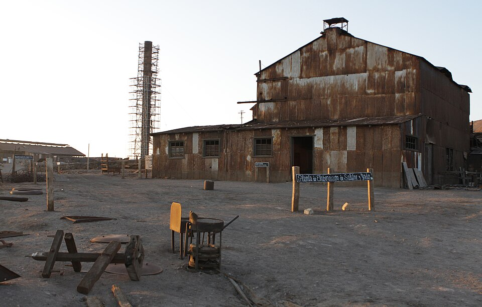

This is about one small, obscure commodity. Production, reserves and price figures come from the US Geological Survey (USGS), which is the most neutral source I found. Market shares, the split of demand and customer concentration come from the 2024 annual report (Form 20-F) of SQM, the Chilean company that is the largest seller. SQM has an interest in the story, and these are its own estimates, so treat them as indicative. A few older figures come from a 2010 note by the research firm Roskill. The USGS's world production total leaves out the United States (output withheld) and China and Uzbekistan (not reported), so shares of "the world" are approximate. Conversions to Singapore dollars use about S$1.29 per US$11 (20 Nov 2026) and are rounded. This explains an industry; it isn't investment advice, or medical advice.
Key findings
- Excluding the US, Chile produced about two-thirds of the world's iodine in 2025: 23,000 tonnes against 9,000 from Japan. Every other country the USGS reports is under 1,000 tonnes.
- SQM says five Chilean companies2 made about 60% of global iodine sales in 2024, SQM alone about 37%. Eight Japanese producers were about 23%, US producers nearly 5%. These are SQM's estimates.
- The biggest use is the dye for X-ray scans (about 37% of demand, SQM's estimate). LCD and LED screens take about 13%.
- The average import price in the US rose3 from US$19.55 a kilogram in 2017 to about US$68 in 2025, roughly 3.5 times (USGS). That is about S$88 a kilogram.
Part 1A crystal nobody thinks about
Start with why you have never heard of it. Iodine is a grey-black crystal that most people know only as brown antiseptic or as an ingredient on a salt packet. Yet it is quietly written into two very different supply chains. When a hospital runs a contrast-enhanced CT scan, the dye contains iodine. When a factory makes the polarising film that sits inside an LCD or LED screen, iodine is one of the raw materials. That's a medical product and a consumer-electronics part, joined by one element that almost nobody has on their radar.
The element is also oddly hard to get. According to the USGS, seawater holds about 0.064 parts per million of it, and the oceans are estimated to hold some 90 billion tonnes. But the world doesn't get its iodine from the sea. It gets almost all of it from three places: Chilean desert mines, Japanese gas and oil fields and the brine wells of north-western Oklahoma.

Part 2Three places it comes from
The USGS lists reported 2025 output for seven countries, and the first two are the whole story. Chile made about 23,000 tonnes and Japan about 9,000. Everything else the USGS could report was below 1,000 tonnes each. The US is third overall but its number is withheld, to avoid revealing company data. The USGS says that, excluding the US, Chile made about two-thirds of the world's iodine.
The three sources work in different ways. In Chile, iodine comes from a mineral called caliche ore, which SQM's filing describes as "unique". In Japan, it is recovered from brine that comes up with natural gas. INPEX, one Japanese producer, says seven companies make iodine there, about 80%6 of it in Chiba prefecture, which has "one of the world's largest brine deposits". The Oklahoma iodine, which the USGS says three companies made in 2025, also comes from brine wells. The USGS describes iodine production as a by-product business: of gas, nitrates and oil.

Now the twist. Chile produces most of the iodine, but it isn't where most of the reserves are. The USGS puts Japan's iodine reserves at 4.9 million tonnes against Chile's 750,000, out of a world total of more than 6.3 million. By my arithmetic, at 2025 rates that's roughly 540 years of Japanese output but only about 33 years of Chilean output. Reserves are an economic estimate, not a forecast, and Chile's figure was revised this year. But it shows that today's leader isn't necessarily the biggest holder.
Part 3Who sells it
The ore is one thing and the sellers another. SQM's 2024 filing gives the best view I found of who sold how much, and it is the company's own estimate. Scroll through; one square is about one percentage point of world sales in 2024.
Three-fifths of the world's iodine is sold by five companies, all in one Chilean desert.
Part 4Where it goes
What is all this iodine for? The USGS lists the leading uses, in descending order of quantity, as X-ray contrast media, LCDs, pharmaceuticals, iodophors, animal feed and fluorochemicals. SQM puts numbers on them. X-ray contrast media took about 37% of demand in 2024. The company says iodine's "high atomic number and density" make it suited to the job: it helps vessels and organs stand out on a scan.
An ordinary X-ray sees through most of the body in similar shades of grey, a bit like a page where every line is printed in the same pale ink. Iodine is dense, so it blocks X-rays strongly. Put it in the blood and the vessels show up, like a highlighter drawn over one line on the page. The scene is a simple picture of the idea, not a medical diagram.
LCD and LED screens are the other big use. Roskill, a research firm, wrote in 2010 that iodine in optical polarising film (a layer inside an LCD) already made up about 12% of total consumption, and that demand for it had grown by 22% a year since 2000. That note is old. SQM's 2024 estimate is about 13%. The two sources measure differently, so don't read it as a trend, but the screen share looks broadly similar. The rest is a long tail of other uses.
One more thing about demand: the USGS notes that "no comparable substitutes exist" for iodine in many of its main uses, including animal feed, catalytic, nutritional, pharmaceutical and photographic ones. Bromine and chlorine can stand in for biocide, colorant and ink uses, but they are "usually considered less desirable". When a buyer can't swap the input, the price is the only valve.
Part 5The price
Which brings us to the price. The USGS tracks the average value of iodine imported into the US (including insurance and freight). In 2017 it was US$19.55 a kilogram. By 2025 it was an estimated US$68, about 3.5 times as much and roughly S$88. Note that this is a US import value, not a global spot price, and that it rises in every one of the eight year-to-year steps shown.
SQM's own numbers tell a similar story from the seller's side. It says its average iodine price was about US$67 a kilogram in 2024 and about US$68 in 2023, and that its volumes rose from 12.7 thousand tonnes in 2022 to 13.1 in 2023 and 14.5 in 2024. Iodine revenue went from US$754 million to US$892 million to US$968 million. The company also estimates the market grew about 7 to 8% in 2024, and expected prices to stay "relatively stable, due to limited market supply" in 2025.
Imagine a barrel that fills from one tap at a fixed pace, while the queue of people with cups gets a little longer each year. Nobody can make the water run faster by wanting it more. The tap can only grow when someone builds a new one, which takes time. In the meantime, the price of a cup is what keeps the queue in order. Supply can grow: the USGS says one US producer opened an eighth plant in 2025 and a leading Chilean producer planned to add 4,000 tonnes a year of capacity. But it grows plant by plant.
For the official yearly numbers, the US Geological Survey's iodine statistics7 page carries the Mineral Commodity Summary: production by country, reserves, US imports and average price.
Part 6Why it's a bottleneck
A bottleneck needs a few things: few sources, few substitutes, and a market where a few buyers meet a few sellers. Iodine has all three, though none of them is extreme.
Few sources. The USGS says most of the world's iodine comes from just "three areas": Chile's nitrate mines, Japan's gas and oil fields, and Oklahoma's brine wells. Of US imports in 2021 to 2024, 88% came from Chile and 11% from Japan. A supply hiccup in one desert could quickly turn into a price spike. I haven't found a record of a major disruption in the sources I read, so that is a risk, not a history.
Few substitutes. The USGS says there are none comparable in many main uses (see Part 4). Few, big buyers. SQM says its ten largest customers took 77% of its iodine sales in 2024, and two customers each bought at least 10%, together about 33%. It sold to 131 customers in about 33 countries. Its sales are made on spot orders or under supply agreements with minimum and maximum annual commitments, with prices adjusted periodically. When a few buyers meet a few sellers, the price is set in negotiation, not at a corner shop.
There is one softener: recycling. SQM estimates about 16% of the world's iodine supply now comes from recycled waste, mainly from China and Japan. It is a growing source. But it is a topping, not a replacement for the mines.
The Singapore angle. I found no Singapore-specific iodine data, so I won't invent any. What the filing does say is that Asia and others is SQM's biggest iodine region at 43%, ahead of Europe. It doesn't break that down by country. For a Singapore business or AI student, the lesson is about method: a key input to a familiar product can be a commodity you never see on a quote, and a good supply-chain map should go down to that level.
Part 7How we got here
- Before 1959Seaweed is a major source of iodine. The USGS says it remains a large resource, but is less economical than iodine from gas, nitrates and oil.
- 2000 to 2009Roskill estimates iodine demand for polarising film grew 22% a year8 from 2000, reaching about 12% of total consumption in 2009.12%
- 2010Roskill says four producers (SQM, Cosayach, Ise Chemicals and Godo Shigen) hold about two-thirds of installed capacity.
- 2017US import price: US$19.55 a kilogram.$19.55
- 2021 to 2023US import price rises from US$32.72 to US$45.81 to US$61.55.
- 2024SQM sells a record 14.5 thousand tonnes. Five Chilean companies hold about 60% of world sales, by its estimate.60%
- 2025US import price an estimated US$68. A US producer opens its eighth plant; a leading Chilean producer plans a 4,000-tonne capacity increase.
- Feb 2026The USGS publishes its 2026 summary: Chile 23,000 tonnes, Japan 9,000.
- Nov 2026You are here.
So the bottleneck here isn't a chip or a mine you have heard of. It is a crystal in a hospital dye and a screen film, dug mostly from one desert and sold by a handful of firms.
NotesSources
Each number and where it comes from.
- 1Currency: about S$1.29 per US$1, open exchange-rate data, 20 Nov 2026. Figures are rounded. ↩
- 2Market shares (SQM 37%, five Chilean 60%, eight Japanese 23%, US nearly 5%, recycling 16%), demand split by use, volumes and revenues 2022 to 2024, prices of about US$67 and US$68, customer concentration (ten largest 77%; 131 customers in about 33 countries), regional revenue shares, "limited market supply" quote, caliche ore: SQM, Form 20-F for 2024 (SEC). A company filing by the largest seller: its estimates, not independent data. ↩
- 3US import prices for 2017 to 2020: USGS, Mineral Commodity Summaries 2022: Iodine. ↩
- 4Production by country (2025e), reserves, "about two-thirds" Chile statement, three source areas, US import sources 88% Chile and 11% Japan (2021 to 2024), 2021 to 2025 US import prices, leading uses in order, "no comparable substitutes", seawater 0.06 ppm and 90 billion tonnes, seaweed history, US eighth plant and Chilean +4,000 tonnes: USGS, Mineral Commodity Summaries 2026: Iodine (published February 2026). ↩
- 5Photos: Dnn87, CC BY 3.0; Benjamin Goetzinger, CC BY-SA 4.0, both via Wikimedia Commons. ↩
- 6Seven Japanese producers, about 80% in Chiba, brine deposits: INPEX, Naruto gas project page. (SQM counts eight Japanese producers; the two counts differ and I have not reconciled them.) ↩
- 7Iodine production, reserves and prices: USGS National Minerals Information Center (official). ↩
- 8Polarising film at 12% of consumption, 22% a year growth since 2000, four producers at two-thirds of capacity (2010 data): Roskill via PR Newswire, 13 Jul 2010, and AZoM, 14 Jul 2010. ↩
Educational only. Not investment or medical advice. This is a living document and will be updated as new USGS and company data appear.